Search¶
Alation Cloud Service Applies to Alation Cloud Service instances of Alation
Customer Managed Applies to customer-managed instances of Alation
Alation’s Search feature accelerates discovering relevant data by providing the ability to search among different object types and apply multi-dimensional filters to the search results. The Search box is located on the front and center of the Alation homepage and on the top navigation bar on other Alation pages.
The Alation proprietary data search combines usage statistics with text search. It takes into account how often data objects are queried and catalog pages are visited to deliver relevant search results.
On click, the Search box displays the frequently searched object titles in Alation and the Search Alation link. You can start a search on any page using natural language keywords: type a keyword in the search box and press Enter. As you type, the search box dynamically displays the top matching results; click a result to open the corresponding catalog page. You can also click the Search Alation link and go to the Full-Page Search page which has various filter options.
Misspelled search keywords are auto-corrected to speed your search.
You can use search keywords with quotation marks to get an exact match.
You can search for objects by name, and for objects within objects using data object subpaths, such as <database name>.<schema name> or <table name>.<column name>.
The Search results page displays the search results sorted by relevance such as text matches and popularity as shown below:
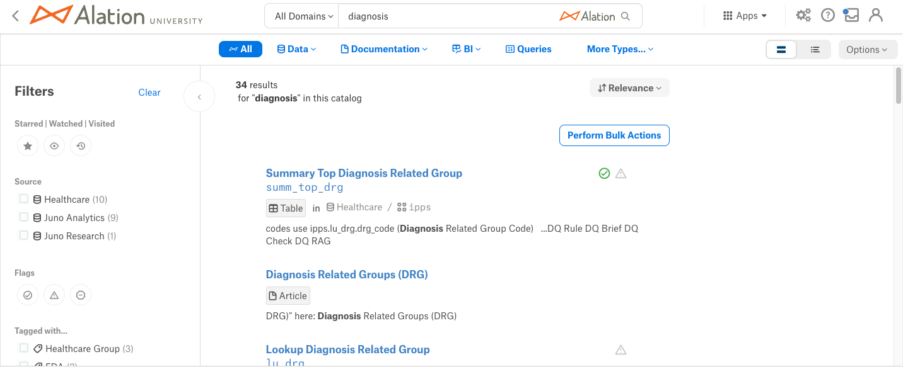For each result, the following information is shown:
Object Title - Title of the object and name of the object (if different from the title).
Object Type and Hierarchy - This is the object type of the catalog object and the path to the object in the object hierarchy.
Description - Description of the object. For queries, a portion of the query SQL code may be displayed.
Trust Flags - If trust flags are relevant for an object and set, then the Endorsement, Warning, or Deprecation icons will be displayed.
From version 2021.2:
The search results page can display the results as a list or a table. By default the results will be displayed in the list view.
Users can switch between list and table by toggling the corresponding view on the top right of the full-page Search results page. Click the Table View icon to view the results in the table view:
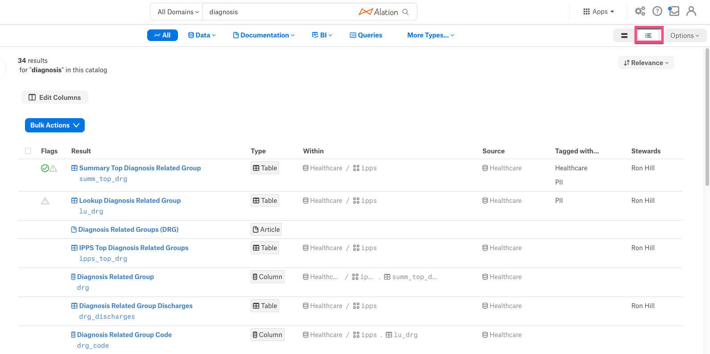The table view displays results in a structured way with the ability to sort, filter, and re-order the content of the table. The table view includes descriptive metadata for each result, including object type, trust flags, path to the object in the catalog, author, query SQL, and other information. To adjust the table view:
Click Edit Columns to show or hide columns from the table. The Result column cannot be hidden.
Click and drag the columns in the Edit Columns to rearrange the columns in the table.
Click the Reset button to restore the table to the default view.
Note
Customizations made to the table view do not reset to the default view after logging out from Alation.
Search Autocomplete¶
From 2021.3, as users start typing in the Search box, they will see keyword suggestions that result from auto-completing the keywords they type. Clicking an auto-suggestion selects this suggestion as the search keyword and leads to the corresponding search results page. Users will see up to 3 auto-completed suggestions as they type as well as a number of relevant objects that match the auto-completed suggestions.
By default, the Search Autocomplete feature is enabled. Refer to Enable the Search Autocomplete for information about how to enable or disable Search Autocomplete.
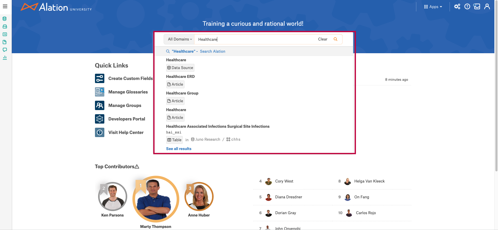Filtering¶
The Search results page has several filter options to filter the search results. The following standard filters are available for most of the object types and the remaining filters vary based on the searched object type:
Object Type
Starred/Watched/Visited
Source
Flags
Tagged With
Additional categories of filters include governance filters (for policy-related filtering), documentation filters (for glossaries and terms), filter by people and related objects (for items such as business owners and stewards), filter by attributes (cost center, department), and filter by dates.
Some of these filters include a Not set option, for items that don’t have the particular field set. Your server admin can disable these Not set options using alation_conf. See Disable the Not Set Filter Option from Appearing in UI.
The filters displayed in the list of filters on the left are the built-in and custom fields found on the catalog template of a given object.
From release 2023.3, you can enable custom field search which allows custom field values to be added to the search index. When custom field search is enabled, you can search for custom field values using the main search bar, and do not have to rely on search filters. See Enable Custom Field Search.
Note
If custom field search is enabled, your users will be able to search for all custom fields, including those that may have been hidden from them using Custom Field Permissions. If you have set such permissions, we recommend that you not enable custom field search.
To clear and reset the applied filters, do either of the following:
Click Options > Clear Filters.
or
Click Clear in the Filters list at the left of the Full-Page Search page.
Sort Search Results¶
When a user performs a search using the Full-Page Search the initial search results are sorted by Relevance, which is the default sorting criterion.
Sort options are available as a button on the top right on the page.
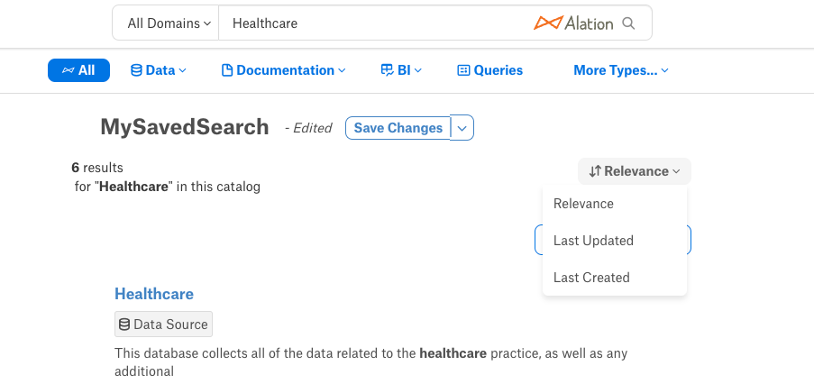
The Sort menu is available for all views (List View or Table View)
The selected Sort value will remain active until the user logs out or closes the current browser tab. When a user logs in again, it gets reset to the default value (Relevance).
Sort Options¶
Relevance - This is the default option and sorts by text matches and popularity
Last Updated - Sorts by displaying the most recently updated data object in a descending order
Last Created - Sorts by displaying the most recently created data object in a descending order
Export Search Results¶
You can also export search results to a CSV file as follows:
Click Options > Export Results. The Export Search Results as CSV dialog appears.
Click Confirm to export the results to a CSV file. The download is limited to 10,000 rows per download and the download status will be sent to the email address if you have opted for Alation email notifications.
From Alation 2023.1.7, if you are exporting a table view, the resulting CSV file contains the columns you have chosen to display; in earlier versions, a default set of columns was exported.
Helpful Search Options¶
In addition to the standard alphanumeric search terms, Alation Search supports a number of special operators, including
wildcard search
negative search
exact search
Search with Wildcards¶
To maximize your search results, you can use the * wildcard. Search will only return objects where the Name and/or Title match the wildcard pattern, thus reducing the number of results and providing exact matches.
Note that search with natural language when wildcard patterns are not used returns matches from the Description field in addition to matches in Title and Name.
You can use one or two asterisks * along with the search keyword to build a wildcard pattern and perform a search. There are 4 wildcard search options available:
Wildcard Search |
Description |
Example |
|---|---|---|
*<search term> |
This pattern searches for the object names and titles ending with a specific keyword. |
*prescribe |
<search term>* |
This pattern searches for the object names and titles beginning with a specific keyword. |
prescribe* |
<search term1>*<search term2> |
This pattern searches for the names and titles beginning and ending with specific keywords. |
why*prescribe |
*<search term>* |
This pattern searches for the keyword anywhere in the name or title. |
*prescribe* |
Note
The Wildcard Search is case insensitive with any Wildcard Search pattern.
Wildcard search supports:
Alphanumeric characters a to z in upper and lower case
Digits 0 to 9
Special characters “,”, “>”, “-”, “_”, “.”, “[”, “]”
Regular Search:
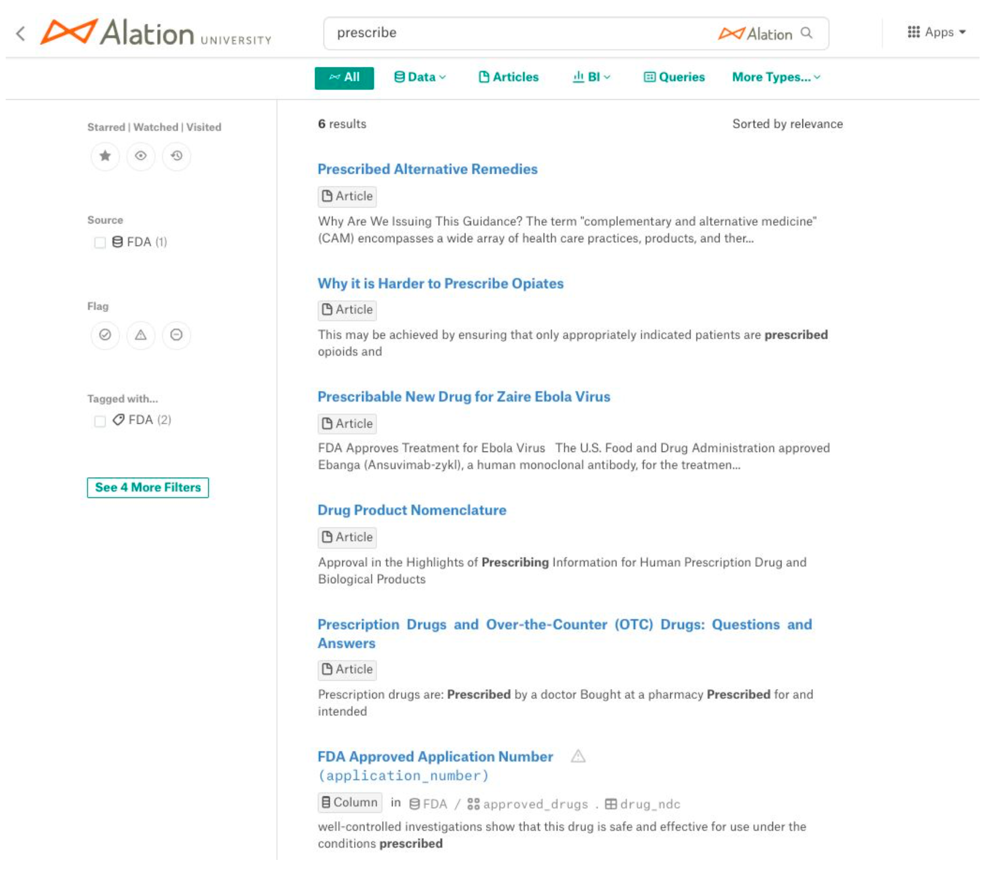Search using a wildcard pattern:
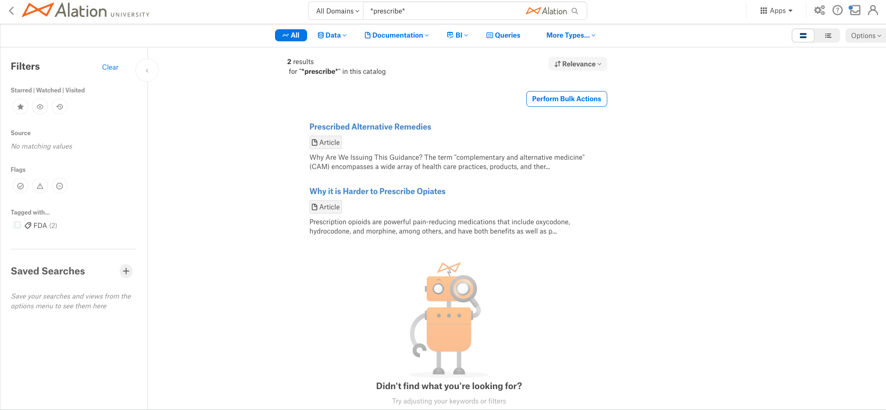Negative Search¶
Sometimes, common phrases are so prevalent they dominate search results. For example, a search for apple might be dominated by results for apple pie. To avoid this, use the hyphen (-) to remove certain words from the search:
apple -pie
The above query returns search results that contain apple, but not pie.
Exact Search¶
If you want to search for an exact word or phrase, surround the term in quotation marks. For example, to find all occurrences of the phrase apple pie, but not apple or pie, use the following search query:
"apple pie"
Saved Searches¶
Available from release 2021.3
It is possible to save and share the search queries in the Full-Page Search. Saving your searches, you can build a list of search results with specific sets of filters for quick reference. Saved searches include the selected columns for the table view.
Saving a Search¶
Saved searches are user specific and visible to the current user only. To save your search:
On the Search page, modify search criteria to get the desired search results. This includes search keywords, data object filters, custom field filters, and sorting.
From the Options menu on top right select Save Search or from the Saved Search section on the bottom left of the page, click the Plus + icon to save your Search.
Full Page Search > Options > Save Search:
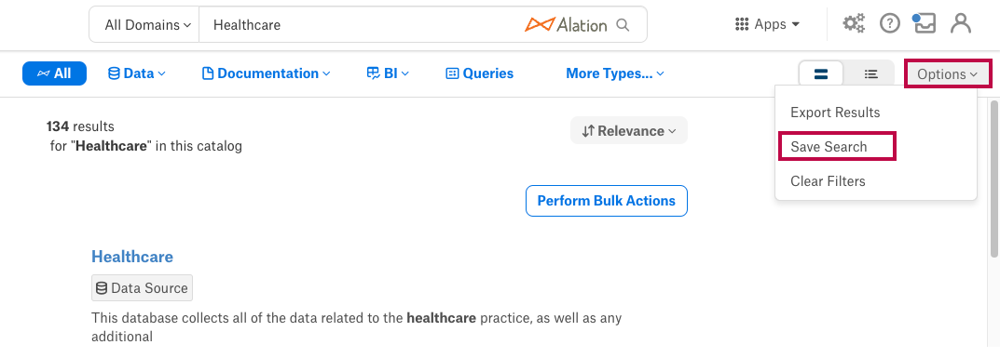Full Page Search > Saved Search:
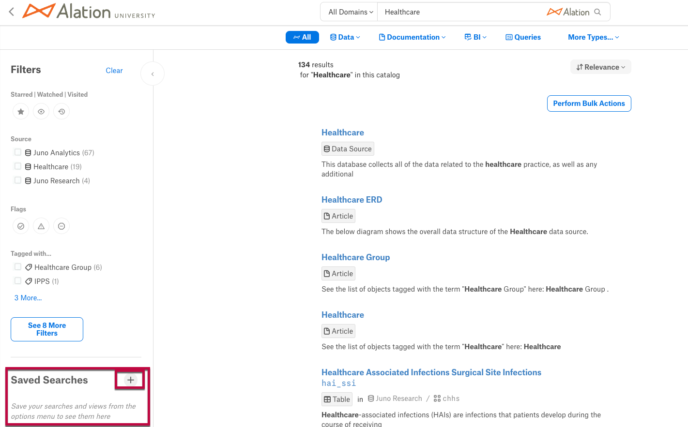
In the Create Saved Search window, type a name for your search in the Name Your Search field. Click the Create button to save the search.
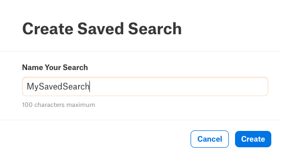
The saved search name is now available in the search results and visible in the Saved Search section.
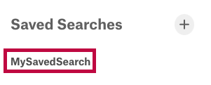
Manage a Saved Search¶
If you make any changes to the Saved Searches, the Save Changes drop-down will appear. In the Save Changes drop-down you can perform the following:
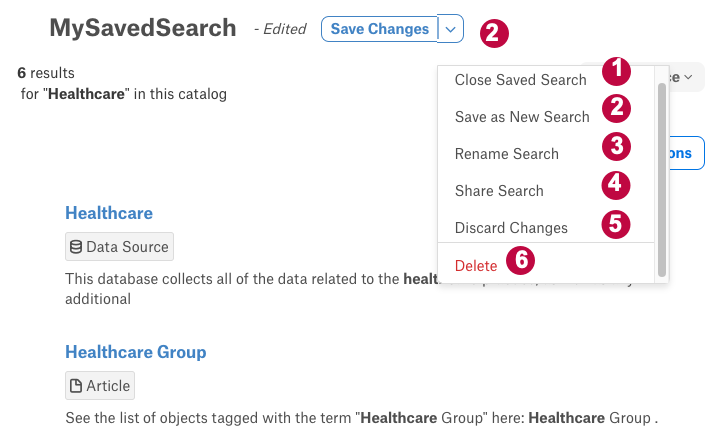1 - Click the Close Saved Search to close the Saved Search.
2 - While in the Saved Search view, changes can be made to the search criteria. Once the changes are made, click the Save changes button to save the changes to the existing Saved Search or click the Save as New Search button to save the modified changes as a new Saved Search.
3 - Click the Rename Search button to rename the Saved Search name.
4 - Click the Share Search button and click the Copy Link button displayed in a window. Save the copied link locally to share it with other users. Once you finish copying the link, click Done.
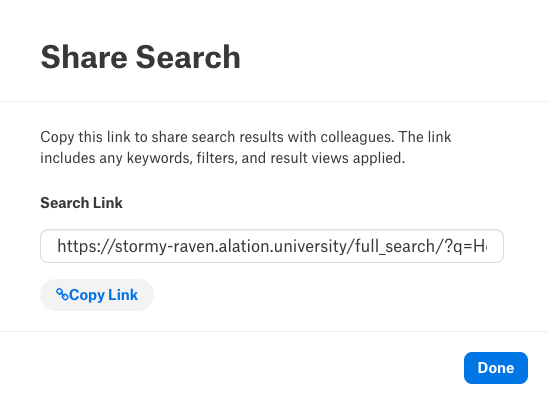Note
The copied link can be shared to other catalog users. They will need to paste the full link into the web browser URL field to see the search results and should save the search for future re-use.
5 - You can also discard the changes by clicking Discard Changes.
Note
The changes will be lost if you leave the Full Page Search, perform a new search or select a different Saved Search.
6 - Click Delete to delete the Saved Search.
Search by Synonyms and Lexicon Abbreviations¶
From Alation version 2023.3.2, you can create synonyms to be used by the search engine using the search synonym API. Endpoints exist also for viewing and deleting lists of synonyms. For example, you could define Microsoft’s stock ticker symbol msft as a synonym for the company name.
Similarly, Alation Search considers confirmed abbreviation-expansion pairs from Lexicon as search keyword synonyms. When a user enters a search word that is an abbreviation that happens to have a confirmed expansion in Lexicon, the search results will return objects that match both the abbreviation the user entered and its confirmed expansion from the Lexicon. By default, the Lexicon Search feature is enabled. Refer to Enable the Lexicon Search to enable or disable the Lexicon Search.
Example:
In this example, the search keyword bnk is a Lexicon abbreviation and the search also returns results which match its expansion, which is bank:
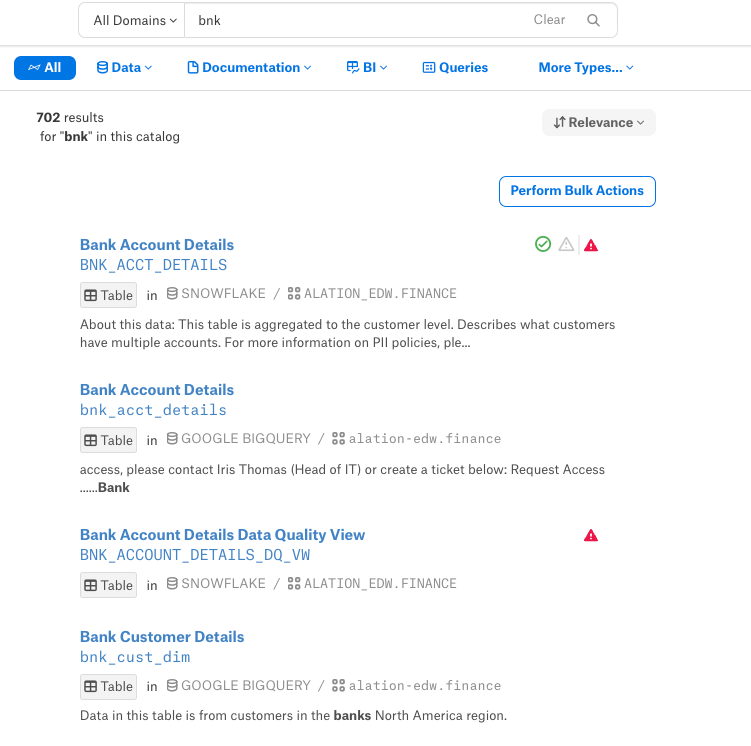Note
If a user searches by a full word, the results will not return Lexicon abbreviations.
Factors That Influence Search Ranking¶
Applies from version 2022.4
Alation Search uses a number of factors to influence its search rankings, including object type and endorsement and deprecation flags.
Server admins can set the relative influence of various object types using alation_conf. By default, Data Sources, Terms, Articles, and Tags are boosted the most.
Endorsing an object will boost its search rank and deprecating an object will penalize its rank and override any endorsements. An endorsed catalog object will be promoted to the top of search results enabling catalog users to find trusted data more easily. However, deprecating an object by adding the Deprecate flag will move this object down in the search results list.
When you are looking at the search results page, note that the objects that are closer to the top of the list may have been endorsed by catalog users.
Alation server admins can find more information about search ranking in Set Search Ranking by Object Type and Set Search Ranking for the Endorsement and Deprecation Flags.
Bulk Actions¶
The full-page search results include a button for performing bulk actions on the search results. This is discussed further in the following topics:
To add or remove policies and data policies in bulk, see Using Stewardship Workbench.
To bulk update custom fields, see Bulk Update Custom Fields.
To bulk update stewards, see Bulk Update Stewards.
To bulk update people sets, see Bulk Update People Sets.